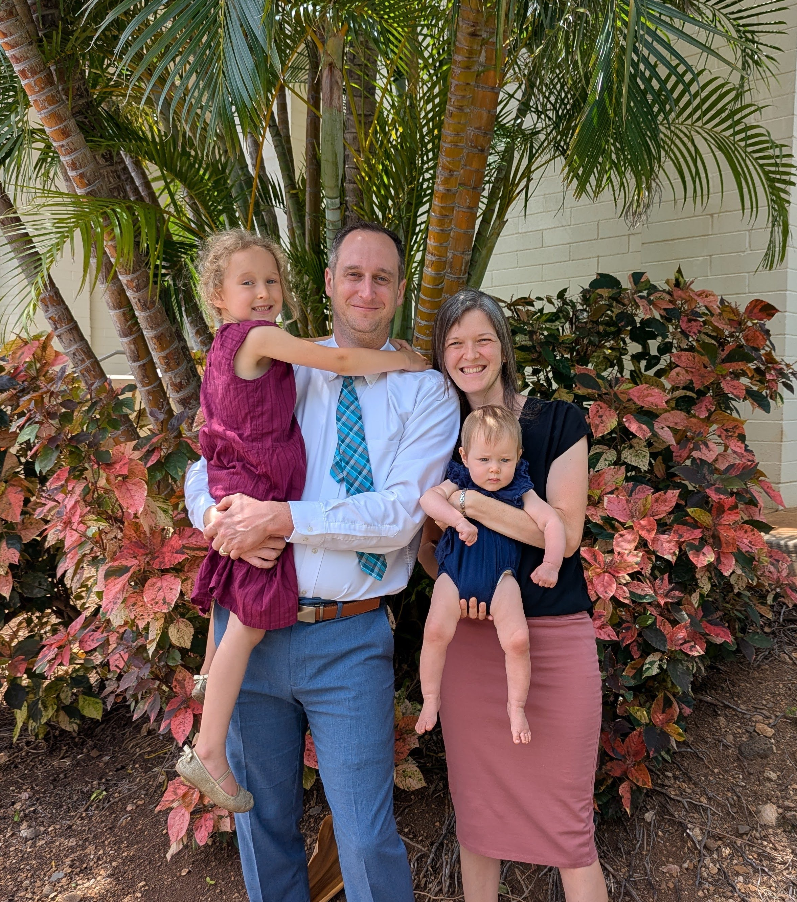

Functional Medicine
An in depth look utilizing the latest labs and research to uncover the root cause.
Functional Medicine + Applied Kinesiology · Springfield, MO
1736 E. Sunshine St. STE 703, Springfield, MO 65804

Two roads diverged in a wood, and I—Robert Frost, The Road Not Taken
I took the one less traveled by,
And that has made all the difference.
Areas of Focus
When things go awry, it is almost always due to getting out of balance. The following are common areas of concern.
What I Offer
From functional medicine to nutrition consultations to musculoskeletal care, I provide a holistic approach to meet my patient’s needs.
An in depth look utilizing the latest labs and research to uncover the root cause.
A holistic approach using neurological testing to fine tune the treatment process.
An ancestral approach to diet focusing on nutrient-dense foods to support optimal health and longevity.
Utilizing myofascial therapy and other techniques to address physical pain and injuries.
Through meditation, connecting back to nature, and stress reduction exercises.
What To Expect
To support your goals of achieving optimal health, we will go through a thorough process to get at the root of your ailments.
Comprehensive Health History and Exam
Systems Health Care Technique
Full Doctor Access
Individualized Treatment Plan
Advanced Lab Analysis
Minimal Follow-ups for Maximal Benefits
Manual Therapies
Nutrition and Lifestyle recommendations
My Story
I spent hundreds of hours in seminars, books, lectures, and watching informational videos to understand the human body so that I can help others by addressing the root cause of illness. The body is truly remarkable. If we can get out of its way and support the natural healing process, wonders can be achieved.
Testimonials
Great caring doctor who is very thorough. I can’t recommend doctor Gabe more highly. I drove 3.5 hours from Arkansas and was really surprised to notice some of my symptoms had disappeared or were greatly reduced shortly after leaving the office.
After months and months of being told nothing is wrong with me, I finally have answers! Dr Gabe was very professional and educational. I can’t wait to get started on my treatment plan.
Dr. Ariciu is fantastic. I’ve spent what seems like forever, trying to get help with my brain fog, fatigue, and consistent low mood. Ive been seeing Dr. Ariciu for about 5 months now and the difference in how I feel is night and day. No more ibuprofen and my mood has elevated exponentially. I couldn’t be more grateful! Thank you!!
Dr. Gabe is very knowledgeable. I’m glad he knows so much about nutrition and the body!
Wow!! Best experience ever and so informative! Thank you!!
Amazing... Cannot say less than amazing
Health Topics